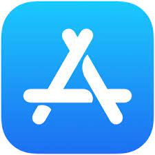
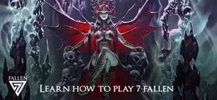

Présentation du Projet Professionnel
Dans le cadre de mon stage de fin d'études chez Seven Fallen (Lyon), j'ai participé au développement de l'application mobile officielle destinée à l'apprentissage et à l'assistance des joueurs du Trading Card Game (TCG) Seven Fallen.
Objectifs de l'Application
Faciliter la prise en main des règles du jeu de cartes, proposer des tutoriels interactifs guidés étape par étape, gérer les phases de jeu complexes, le comptage des points d'énergie et la consultation de la base de données des cartes du jeu.
Mes Missions en tant que Co-Développeur
▸
Développement de Modules Interactifs : Programmation en C# sous Unity des logiques de tutoriels pas-à-pas, des animations de cartes et de la validation des règles.
▸
Intégration d'Interface Utilisateur (UI) Mobile : Adaptation responsive de l'interface tactile pour une multitude de résolutions et ratios d'écrans (smartphones et tablettes Android/iOS).
▸
Optimisation Mobile : Réduction du poids des textures, gestion économe de la mémoire vive et maintien d'une fluidité constante à 60 FPS.
▸
Travail en Équipe & Git : Collaboration étroite avec l'équipe de game design et les artistes pour intégrer les visuels officiels et valider les builds de test.
Captures & Visuels de l'Application
Cliquez sur une image pour l'agrandir :


